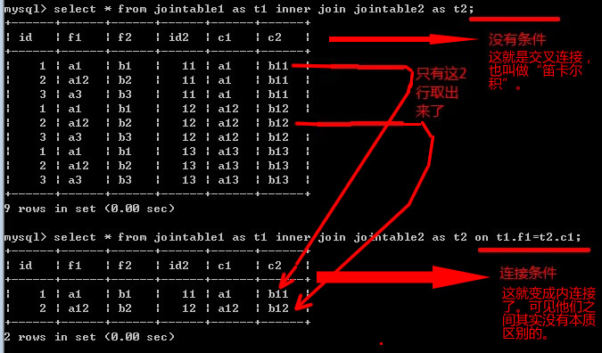

- mysql介绍
- 数据库是什么？
- mysql是一种关系数据库管理系统
- SQL是“结构化查询语言”的标准
- 关系数据库的基本特征（表现）
- 数据存储的本质和表现
- 本质就是将大量的“数据值”通过数据管理系统进行某种复杂但是逻辑结构上清晰有序的存储。
- 如图所示：，
- 但在数据文件表现上，其实只是非常有限的几个文件或文件夹。新建一个数据库会新建一个对应文件夹，新建一个表会新建一个或多个文件。
- 如图所示：，
- 关系数据库的常用基本术语
- 数据data
- 数据库database
- 数据库管理系统dbms
- 表（数据表）table
- 字段field，列column
- 行row，记录record
- mysql数据库应用系统的基本结构：
- 数据库客户端（软件）
- 数据库管理系统（软件）
- 数据（文件）
- mysql数据操作的基本模式（流程）
- 建立连接（认证身份）
- 客户端向服务器端发送sql命令
- 服务器端执行命令，并返回执行的结果
- 客户端接收结果（并显示）
- 断开连接
- mysql系统级操作及基础语法规定
- mysql数据库的安装与配置（略）
- 启动/停止mysql数据库服务
- 命令行模式：net start/stop mysql
- 服务模式：控制面板〉管理工具〉服务〉mysql >启动/停止
- 登录/退出mysql数据库系统
- 登录：mysql -h服务器地址 -u登录名 -P端口号 -p
- 或登录：mysql --host=服务器地址 --user=用户名 --port=端口 --password
- 退出：quit; 或 exit;
- 注意：登录数据库系统后，需要使用“set names 编码名；”来设定当前连接数据库的“环境编码名”，即当前跟数据库打交道的“客户端”本身的编码。通常来说，cmd客户端中是固定的gbk编码，而php网页中，是该网页文件的编码（现在主流都是utf8）。
- 备份/恢复数据
- 备份：mysqldump -h服务器地址 -u登录名 -P端口号 -p 数据库名>文件名
- 恢复：mysql -h服务器地址 -u登录名 -P端口号 -p 数据库名<文件名
- 基础语法规定
- 注释：
- 单行注释： #注释内容
- 单行注释： -- 注释内容（注意，两个“--”之后有一个空格）
- 多行注释： /*注释内容*/
- 语句行：
- 一条语句也称为一条命令，通常用一个分号(;)结束；也可以通过"delimiter 新结束符" 命令来设定新的结束符。
- 语句的执行是以一条语句为单位进行，一次执行一条语句。
- 大小写：
- mysql中的各种系统关键字和命令名本身是不区分大小写的
- mysql中自定义的名称（标识符）的大小写问题，有的区分（跟操作系统有关），有的不区分，详见如下“命名规则”
- 命名（标识符）规则：
- 可以自己命名的名字，称为标识符，包括：数据库名， 表名，字段名，视图名，函数名，过程名，变量名，用户名，，等等。
- 可以命名标识符的字符比常规的语言多，但特别建议只用：字母数字和下划线，并不用数字开头。
- 非常规字符或系统关键字虽然可以作为标识符使用，但最好要包在反引号（数字1左边那个反撇 ` ）中，并且不推荐。
- 对数据库名，表名，和视图名，在window系统中不区分大小写，而其他系统中区分，建议全使用小写，并采用下划线分割法。
- 对其他自己命名的标识符（字段名，函数名，过程名），不区分大小写，但也建议全使用小写，并采用下划线分割法
- mysql数据定义语言DDL（Data Definition Language）
- 数据库定义语句
- 创建数据库
- create database [if not exists] 数据库名 [character set=字符集] [collate=校对集];
- character set:用来设定数据库中的字符数据所要使用的字符编码，一些固定的名字，常用有utf8，gbk，gb2312。 也可以写成charset。
- collate：翻译为整序，整理，校对集，校对规则，排序规则——其实就是指字符以何种方式进行排序的设定，也是一些跟字符编码有关联的固定名字。比如“传”和“智”两个字，按拼音，就是“传”在前，但按笔顺，就是“智”在前。
- 数据库创建后的文件及存放位置：/data/数据库名/db.opt
- 其中的等号可以省略，但需有空格，比如：character set utf8 collate utf8_general_ci
- 查看：show charset; show collation;
- 修改数据库：所谓修改数据库就是修改数据库的选项值。
- alter database 数据库名 character set=新字符集 collate=新校对集;
- 删除数据库
- drop database [if exists] 数据库;
- 其他相关
- 进入（使用）某个数据库：
- 显示所有数据库：
- 显示某数据库的创建语句
- 字段类型，也就是数据类型。
- 类型概览：

- 整数类型
- tinyint(1), smallint(2), mediumint(3),int(4), bigint(8)。括号中表示该类型所占空间的长度（字节数）
- 各自取值范围：
- 整数类型通用设定形式： 类型名[(M)] [unsigned] [zerofill]。
- 其中M表示“显示长度”，其需与zerofill结合使用才有效，即不够该长度的会自动左侧补0，当然如果超出也不影响。
- unsigned表示“无符号数”，表示其中的数值是“非负”数字
- 如果设置了zerofill，则自动也就表示同时具备了unsigned修饰
- 如果设置了zerofill但没有设定长度M，则其会默认将所有数的左边补0到该类型的最大位数
- 小数类型
- 单精度浮点型：float，范围大约是-3.4E+38到-1.1E-38、0和1.1E-38到3.4E+38
- 双精度浮点型：double，范围大约是-1.7E+308到-2.2E-308、0和2.2E-308到 1.7E+308。 real是double的别名。
- 定点型：decimal，也可以写成：dec，numeric，fixed（当然后3者尽量不用）。decimal类型整数部分最长可以有65位，小数部分最长可以有30位。一般设置格式为：decimal(总位数，小数部分位数）
- 字符串类型
- 定长字符串char：应设定字符个数，不足设定值，则右侧自动填满空格；最大255个字符。
- 变长字符串varchar：需设定字符个数，最大65532个字符，且不超过65532个字节（考虑字符集问题）。实际还得考虑一行的其他字段所占的长度。
- 定长二进制字符串binary：类似char，应该设定长度值，只是按“二进制字节”保存存字符数据，最大255个字节，无编码问题
- 变长二进制字符串varbinary：类似varchar，需要设定长度值，只是按“二进制字节”存字符数据，最大65532个字节，无编码问题
- 文本列类型text：用于存储普通文本，不受行的最大长度的限制，同类还有：tinytext, mediuntext, longtext
- 二进制列类型blob：用于存储二进制字节内容，不受行的最大长度的限制，同类的还有：tinyblob, mediumblob, longblob
- 枚举类型enum： 类似单选项应用中的多个选项值，最大65535个选项值；使用形式：enum('value1', 'value2', ... )；存储数据的时候其实存的是一个对应的数字序号（从1开始）
- set类型：类似多选项应用中的多个选项，最多64个选项，使用形式：set('value1', 'value2', ...)； 内部存储的也是数字（依次为1,2,4,8, ....），但可以是多个值，比如5就表示2个值（1，4），14就表示3个值（2，4，8）
- 时间日期类型
- date类型： 支持的范围为'1000-01-01'到'9999-12-31'
- time类型： 支持的范围是'-838:59:59'到'838:59:59'
- datetime类型：支持的范围是'1000-01-01 00:00:00'到'9999-12-31 23:59:59'
- timestamp类型：时间戳，就是表示“当前时刻”，类似函数now()获得的值，用于INSERT或UPDATE操作时自动获得当前时间
- year类型： 四位字符串，范围为'1901'到'2155'；四位数字，范围为1901到2155；两位字符串，范围为'00'到'99'；两位整数，范围为1到99
- 其他（了解）：
- 位类型bit：使用形式：bit[(M)]，其中M是1-64的数字，表示使用多少位二进制数字来存储数据。插入形式为：b'value'，比如：b'101'
- 序列类型serial： 其实只是BIGINT UNSIGNED NOT NULL AUTO_INCREMENT UNIQUE的一个别名（同义词）
- 布尔类型bool：其实只是tinyint(1)的一个同义词，其值为0就表示false，否则表示true
- 表定义语句
- 创建表
- 基本形式：create table [if not exists] 表名 (字段列表 [，索引或约束列表]) [表选项列表]；
- 字段列表：多个字段的定义项，相互之间用逗号隔开；
- 字段定义形式：字段名 字段类型 [字段属性列表]
- 字段属性列表由多个字段属性构成，相互之间用空格隔开，可以包括如下一些：
- primary key：设定为主键。主键的本质是表示“该表中该字段值可以唯一确定某行数据”，并具有2个隐含含义：唯一性，不为空。
- unique [key]：设定为唯一（键），即表中所有行的的数据在该字段中的值不能有重复。
- not null|null：设定该字段是否可空（可以放置空值null），默认不设置就是表示可为空。
- auto_increment：设定自增长，表示一个整数类型的字段的值可以“自动递增取值”，设置后其必须同时设置为一个主键索引或唯一索引或普通索引。一个表只能有一个auto_increment属性的字段。
- default 默认值：设定默认值，表示当插入新数据的时候如果该字段没有给值，就会自动使用该默认值。
- comment '字段注释'：设置字段的注释文字，用单引号引起来。
- 索引列表：多个索引的定义项，相互之间用逗号隔开，可选。
- 什么是索引：索引就是数据库内部对某个表的所有数据行预先进行的某种排序。一个表可以设定（添加）多个索引，则就会有多个排序。就如新华字典，是“所有汉字”的一个纸质表，其默认是按拼音的排序，同时前面还有个部首表，此部首查表就是该新华字典所有汉字的一个“索引”。对我们程序员的应用来说，索引只是一个对某个表的“设定”，一两个单词而已，而在数据库内部，数据库管理系统会创建并维护一个跟当前表关联的“索引表”，该表数据已经按某种方式排好了序。给一个表建立索引的目的是加速数据的读取。但同时加重了数据库增删改命令的负担，因而需要权衡考虑是否需要给某个表的某个字段设定索引。有如下几种索引：
- 普通索引：没有特定其他作用，就只是建立索引。设定形式：index|key [索引名] (字段名1[，字段名2,...])。
- 唯一索引：设定某字段为唯一，且建立索引。设定形式： unique [key] [索引名] (字段名1[，字段名2,...])。
- 主键索引：设定某字段为主键，且建立索引。设定形式：primary key [索引名] (字段名1[，字段名2,...])。主键索引是唯一索引的特例，也是唯一索引的“加强”，主键索引本身就包含了“唯一性”，同时主键索引的字段不能为空值（null）。有时候需要用多个字段来确定主键，此时称为“联合主键”。联合主键的意思是多个（２个以上）的字段合在一起才算主键设定。比如某个学生管理系统中有个“成绩表”，记录了一个学生整个大学所有所学课程的考试成绩。则该表中至少要记录３项信息：学生ＩＤ，课程名称，成绩。且此时我们要查到一个成绩，必须确定学生ＩＤ和课程名，才可能确定该成绩。我们不能说该学生成绩是多少，也不能说某门课成绩是多少，而必须说某个学生的某门课成绩是多少。此时，学生ＩＤ和课程名称合起来才能确定一个有意义的数据，这这个字段就构成“主键”。如图所示：。如果没有主键，则可能会造成数据的冲突或歧义，比如：工资表，如果没有主键，同名时就无法区分谁的工资是多少。成绩表，如果没有主键，则可能出现某个人的某门课有多个成绩数据。
- 全文索引：设定某字段可进行全文查找。 设定形式： fulltext [index][索引名] (字段名1[，字段名2,...])。
- 约束列表：多个约束的定义项，相互之间用逗号隔开，可选。
- 什么是约束？故名思义，约束就是对表中数据的某种限制。当然此限制是我们人为加上去的为了使我们的数据更具有“合理性”和“安全性”。数据的最基本约束是“数据类型”，比如保存工资的字段，就不应该存入字符串值（这一点来说，excel表格就做不到），此时设定其数据类型就解决了此问题。但我们这里说的约束，是在现有已经设定好数据类型基础上的进一步“要求”，比如，一个学校的学生学号，有一个要求就是“不能重号”，则我们可以给该字段设定“唯一性”约束它，这就是唯一约束。mysql有如下几项约束：
- 主键约束：设定形式：[constraint] primary key (字段名1[，字段名2,...])。含义同字段的同名属性。
- 唯一约束：设定形式：[constraint] unique [index] (字段名1[，字段名2,...])。含义同字段的同名属性。
- 外键约束：设定形式：[constraint] foreign key (字段名1[，字段名2,...]) references 表名(字段名1[，字段名2,...]）。
- 什么是外键？外键就是关系数据库的一个基本特征的实现，表明该字段的值是跟外部的某个表的某个字段的值“对应”的，或者也可以说来自于该外部的某个表的某个字段值。如果给一个设定了外键的字段插入一个值，而该值并没有在该外键所指定的外部表的对应字段中出现，则该值就会插入失败，这也就是数据库内部的“约束机制”（使我们的数据更“纯净”），参考：
- 非空约束：其实就是字段属性中的“not null”，只能在字段上设置。
- 默认约束：其实就是字段属性中的“default 默认值”，只能在字段上设置。
- 检查约束：指使用一定的判断表达式来对某个字段中的值进行“合理性”限制，比如年龄字段，虽可以设定为tinyint，但其实仍然会超出合理范围，则可以设定检查约束，只能输入0-120作为“合法年龄”数据。不过，当前mysql版本尚不支持。
- 表选项列表：多个表选项的设定项，相互之间用逗号或空格隔开，可选。常用表选项如下：
- ENGINE=存储引擎名。
- 什么是存储引擎？存储引擎也叫“表类型”，是指一个表中的数据以何种方式存放在文件或内存中。不同的存储引擎（表类型）提供不同的性能特性和可用功能。没有一种各方面都又具有最佳性能又具有各种功能的存储引擎。我们要做的是要根据数据的具体使用情形（需求）来选择合适的存储引擎，有的要读取速度快，有的要写入速度快，有的要具有高安全可靠性，有的要海量存储，等等。常用的存储引擎是innoDB（默认）和Myisam。各种存储引擎性能与功能对比如下（了解）：
- CHARACTER SET=要使用的编码名 [COLLATE=要使用的校对集名 ]
- auto_increment = 自增长字段的起始值
- comment='表的注释说明文字
- 修改表
- 修改表是指修改表的结构或特性。理论上创建一个表能做到的事情，修改表也能做到。修改表有二三十项修改项，包括增删改字段，增删索引，增删约束，修改表选项等等。举例如下：
- 添加字段：alter table 表名 add [column] 新字段名 字段类型 [字段属性列表]；
- 修改字段（并可改名）：alter table 表名 change [column] 旧字段名 新字段名 新字段类型 [新字段属性列表]；
- 修改字段（只改属性）：alter table 表名 modify [column] 字段名 新字段类型 [新字段属性列表]；
- 修改字段名：灰常灰常抱歉，没有单纯修改字段名这个功能！
- 删除字段：alter table 表名 drop [column] 字段名；
- 添加普通索引：alter table 表名 add index [索引名] (字段名1[，字段名2,...])；
- 添加主键索引(约束)：alter table 表名 add primary key (字段名1[，字段名2,...])；
- 添加外键索引(约束)：alter table 表名1 add foreign key (字段1，[，字段名2,...]) references 表名2(字段1，[，字段名2,...])；
- 添加唯一索引(约束)：alter table 表名 add unique (字段名1[，字段名2,...])；
- 添加字段默认值(约束)：alter table 表名 alter [column] 字段名 set default 默认值；
- 删除字段默认值(约束)：alter table 表名 alter [column] 字段名 drop default；
- 删除主键：alter table 表名 drop primay key；#每一个表最多只能有一个主键
- 删除外键：alter table 表名 drop foreign key 外键名；
- 删除索引：alter table 表名 drop index 索引名；
- 修改表名：alter table 表名 rename [to] 新表名；
- 修改表选项：alter table 表名 选项名1=选项值1，选项名2=选项值2，...；
- 删除表: drop table [if exists] 表名；
- 其他表相关语句：
- 显示所有表: show tables；
- 显示某表的结构: desc 表名； 或：describe 表名；
- 显示某表的创建语句：show create table 表名；
- 重命名表：rename table 旧表名 to 新表名；
- 从已有表复制表结构：create table [if not exists] 新表名 like 原表名;
- 创建索引：create [unique | fulltext] index 索引名 on 表名(字段名1[，字段名2,...])。这里省略unique或fulltext，那就是普通索引。实际上此创建索引语句，会在系统内部映射为一条“alter table”的添加索引语句。
- 删除索引：drop index 索引名 on 表名。实际上，此语句同样被映射为一条“alter table”的删除索引语句。
- 视图定义语句
- 什么是视图？视图是一个虚拟表，其内容由一条查询语句来定义。也可以认为，视图就是一条select语句的查询结果，只是预先放在数据库中而已。我们可以将此查询结果（有行有列有字段名）当作一个表来使用。
- 创建视图： create view 视图名 [（列名1，列名2，...）] as select语句；
- 视图名不能跟表名同名——因为他们都是隶属于数据库的“对象”；
- 视图的默认列名就是定义视图的时候的select语句中设定的列名；
- 视图定义的时候也可以指定自己的列名，但此时指定的列名数应该跟select语句的列名数相等；
- select语句可以从多个表中取用数据，甚至还可以从其他视图中取数据
- 修改视图： alter view 视图名 [（列名1，列名2，...）] as select语句；
- 删除视图： drop view [if exists] 视图名；
- 数据库（表）设计介绍：
- 所谓数据库的设计，通常就是指数据表的设计，也就是表结构的设计，以及需要哪些表。这种设计基本都是由每一个具体的项目功能来决定的。我们需要确定一个项目会用到哪些“现实数据”，以及为实现这些功能还需要创建（或定义）哪些数据才可以到达功能目标。这也就是构成了一个项目的数据库设计工作。数据库设计工作通常都是一个项目在技术层面最为重要和基础的工作。数据库设计没定下来，后续的开发工作很难进行。数据库设计得不好，后续的开发工作就可能问题重重。
- 数据库设计原则——也称为数据库设计三范式（3NF）
- 第一范式（1NF）：原子性，数据不可再分：一个表中的数据（字段值）不可再分。我们来看一个不良做法：，再来看修正后的做法：
- 第二范式（2NF）：唯一性，消除部分依赖：一个表中的每一行必须唯一可区分，且非主键字段值完全依赖主键字段值。也可说，必须消除在一个表中的的非主键字段值仅仅依赖于部分主键值的情形。显然这个要求只对有联合主键的表才有可能违反情况的，而对单字段主键的表是不会出现的。不良做法：，修正之后：
- 第三范式（3NF）：独立性，消除传递依赖：使一个表中的任何一个非主键，完全独立地依赖于主键，而不能又依赖于另外的非主键。如果一个表中的一个非主键字段（B）依赖于另一个非主键字段（A），因为A作为非主键字段，自然是依赖于主键字段的（范式2所决定），则此时就会出现传递依赖：（主键）->（A）->（B）。第三范式就是要消除（或避免）这种依赖。通常的实际做法中，我们只要注意做到“一个表存储一种数据”就可以符合第三范式。不良做法：，修正之后：
- 相关说明：
- 数据库设计范式是指导我们设计出没有或较少数据冗余并具有良好数据关系的理论而已。但实际上第一范式我们无需考虑就可以显而易见地做到，而第二第三范式合在一起我们通常只要做到“一个表只存一种数据”就可以达到。理论通常都难于理解，但实践通常都容易做到。
- 后一范式都是在满足前一范式的基础上再加强一点要求的结果。
- 在实际应用中，我们并不总是去绝对完全符合三范式来设计数据表。有时候出于效率或其他因素的考虑，可能特意设计出略微不符合第二范式或第三范式的表，也是可以的。
- mysql数据操作语言DML（Data Manipulation Language）
- 插入数据：
- 3种语法形式：
- 形式一：insert [into] 表名 [（字段名1，字段名2，....）] values (值表达式1，值表达式2，....), (.....), ....；
- 形式二：insert [into] 表名 set 字段名1=值表达式1，字段名2=值表达式2，....；
- 形式三：insert [into] 表名 [（字段名1，字段名2，....）] select 字段名1，字段名2，.... from 其他表名；
- 解释说明：
- 形式一和形式三可以一次性插入多条数据，且形式三的数据来源是由其中的select语句所获取的。
- 形式一和形式三的字段列表部分可以省略（但严重不推荐），此时值列表部分必须依次完全对应该表的每一个字段
- 不管哪种形式，字段名和字段值都有“一一对应”关系：数量，顺序和类型都应该对应。
- 不管哪种形式，每次插入都必然是以“行”为单位进行，要么成功插入一行，要么失败。对于语句中没有给定的字段，成功的插入必然会根据表或系统的设定而获得“默认值”（有时候默认值就是空值“null”）
- 注意字符串类型和时间日期类型的字面量值通常都需要用单引号引起来，比如：'abc','传智播客', '2013-4-5 6:7:8"
- 语句中所给定的字段名的顺序可以不是表中的实际顺序。
- 有的字段通常都无需插入数据，比如具有auto_increment属性的字段，或类型为timestamp的字段。
- 其他类似插入数据语法：
- 载入文本数据：load data infile语法：这个语法比较复杂，知道就行，其作用是从一个外部的记事本文件中导入数据到某个表中。该记事本中的数据通常要求“比较整齐”，一行文本对应表的一行数据，一行中用某种字符（通常用tab符）来分割一个一个字段的值，类似这样：
 。该语句的语法简单解释如图所示：
。该语句的语法简单解释如图所示：
- 完整复制一个表（包括表结构和表数据）：create table 新表名 select * from 原表名；
- 删除数据：
- 基本语法形式：delete from 表名 [where条件] [order排序] [limit限定]；
- 解释说明：
- 删除是以“行”为单位的，一行数据要么删除成功，要么没有删除。
- where条件可选，但通常都必须有，用来删除满足条件的数据；如果没有设定条件，则会删除所有数据。
- order排序可选，通常不需要，用来指定按设定的数据顺序删除。
- limit限定可选，通常不需要，用来限定删除哪些行的数据（指第几行开始的多少条）。
- 其他类似删除数据语句：
- truncate语句：truncate [table] 表名；用于直接删除整个表（结构）并重新创建该表。此时数据自然全部没有了，而且表恢复到初始状态（比如auto_increment的当前值就变成初始值了，而如果用delete删除即使删除所有数据，auto_increment值也会保留）。
- 修改数据：
- 基本语法形式：update 表名 set 字段名1=值表达式1，字段名2=值表达式2，....[where条件] [order排序] [limit限定]；
- 解释说明：
- 修改是以“行”为单位的，一行数据要么修改成功，要么没有修改，虽然我们可以设定只修改表中的部分字段，但也应该以“行”为单位去理解它。
- where条件可选，但通常都必须有，用来修改满足条件的数据；如果没有设定条件，则会修改所有数据。
- order排序可选，通常不需要，用来指定按设定的数据顺序修改。
- limit限定可选，通常不需要，用来限定修改哪些行的数据（指第几行开始的多少条）。
- mysql数据查询语言DQL（Data Query Language）
- 基本查询：
- 语法形式：select [all | distinct] 字段或表达式列表 [from子句] [where子句] [group by子句] [having子句] [order by子句] [limit子句]；
- 基本含义与解释：select语句表示从某个或某些表中查询（取得）若干条数据。上述语法形式中，所有中括号中的部分都是可以省略的，但如果出现，则他们的顺序必须按上述给出的顺序书写。而且，逻辑上，后一子句都是在前一子句所获得的结果的基础上再进行其设定的功能操作，如图所示：。各部分的含义分别解释如下：
- [all | distinct]表示是否返回取得的数据中的“重复行”。all表示会返回重复行，distinct表示不返回重复行，意思是，重复的若干行数据就只返回一行了。默认不写就是all，也是最常用的，因为通常数据都不会有重复行。
- 字段或表达式列表：
- 使用形式： 字段或表达式1 [as] [别名1]， 字段或表达式2 [as] [别名2]， ....
- 这部分最常见的就是字段列表。也可以看出，select语句的各部分中，就这部分不可以省略。每一项之间用逗号分开，表示结果集中的一个字段值。字段就是表示某个或某些表的中的字段名，顺序可以按我们需要的写，而不必非得按数据表中字段的本来顺序。另外，也可以看出，还有一种情况是可以为“表达式”。另外，每一个字段或表达式都可以使用一个“别名”来重新命名。举例如下：
- select id, userName, userPswd, realName from userInfo; #最常规情况
- select id, userName as un, userPswd as up, realName from userInfo;#给其中的2个字段设定了别名，其中as关键字可以省略，但建议都写上。
- select id，concat(userName, userPswd) from userInfo; #将userName和userPswd“连接起来”作为一个字符串字段，这就是表达式。
- select id, concat(userName,'-',userPswd) as uu from userInfo; #连接了字段和其他非字段数据（这里是一个“-”），并给其一个别名
- select id，5 as f1, 1+2*3 as f2 from userInfo; #一个字段值，一个固定值（别名为f1），一个计算值（别名为f2）
- select 5 as f1, 1+2*3 as f2 ; #特别注意：如果我们要“取得”的数据根本不在表格中的时候，就无需from子句了。本句类似上一句，只是没有id这个字段的数据。
- select 表名1.id, 表名2.id as id2, 表名1.userName, regTime, tele from 表1，表2； #字段前可以用表名来做限定，通常只有from子句有多个表，且不同表的名称有相同字段的时候需要。如果字段名本身就不同，也可以不写。
- 注意：别名就可在后续的语法部分（比如group部分，order部分）当作字段名使用，但不能在where部分使用。
- from子句：
- 表示从哪个（或哪些）表中取得数据。根据上一项的含义可见，也可以不从任何表中取得数据，此时from子句就可以省略了。举例如下：
- from 表名1； #这是最常用，最基本，也是最容易理解的情况。
- from 表名1，表名2； #这是表示从这2个表中取得数据。具体到底怎么取，这就涉及到下面要学的“连接查询了”。
- from 表名1 [连接方式] 表名2 on 连接条件；#这也是从2个表中取得数据并指定这两个表的连接方式和连接条件。
- where子句：
- where子句表示从给出的表的数据中，取出其中符合条件的数据，通常都是对字段数据的判断。除了特殊的null，各种条件判断表达式返回的结果都是true或false（实际输出是1或0）。而其中null其实也被当作false看待，因为是条件语句，所以终究只能说条件要么成立（true），要么不成立（false）。其中涉及到的有多方面的条件判断相关知识。如下：
- 算术运算符：+, -， *， /， %。
- 比较运算符： >， >=， <， <=， =（等于）， <>（不等于）， !=（不等于）
- 逻辑运算符： and(与) or(或) not(非)。含义和用法同其他编程语言（只是不用那几个符号，而是用单词）。也可以用&&，||, ！这3个符号，但不推荐
- 布尔值和空值（null）的判断：XX is true, XX is false, XX is null, XX is not null
- between语法：字段名 between 小值 and 大值（表示该字段的值在给定的两个值之间，含该俩值）；字段名 not between 值1 and 值2（相反含义）。比如where id between 1 and 5，则会返回id>=1并且id<=5的数据，其实它也相当于： id>=1 and id<=5;
- in 语法：字段名 in（值1，值2，...）。其表示的含义是，找出字段值等于所给定的那些值之一的数据行。也可以有not in语法：字段名 not in （值1，值2，...）。比如 where id in (5,7,8)，则会返回id等于5或7或8的数据。where id not(5,7,8)表示除了这3个的其他所有
- like语法：字段名 like '字符'。含义是“像什么一样”，用于从字符串中找出含有指定字符的数据，即所谓的“模糊查找”。但这里字符，通常都不是直接写要找的字符，而是要附上一些表示模糊性的特殊字符。分解如下：
- where realName like '罗六奇'; #找出realName等于'罗六奇'的记录，这里实际相当于where realName='罗六奇';所以like的这种用法几乎没有意义。
- where realName like '罗'; #同上，找出realName='罗'的记录，实际可能没有这个记录，所以没有意义。
- where realName like '罗%'; #这里“%”就是一个特殊字符，表示“任意个数的任意字符”，所以这里就可以找出realName为以下值的记录：罗六奇，罗哥哥，罗叔叔，罗大脑袋，罗伯斯比尔....，即姓罗的都能找出来。但找不出这样的记录：老罗，老罗六奇，彪悍的罗永浩....
- where realName like '%罗%"; #这种形式就是典型的“模糊查找”，可以找出realName字段中的任意位置含“罗”这个字符的记录。
- where realName like '罗_"; #这里“_”就是一个特殊字符，表示“一个任意字符”，所以这里就可以找出realName为以下值的记录：罗弟，罗哥，罗叔，罗胖....，但找不出以下记录：罗六奇，罗哥哥，老罗，老罗永浩....。
- 要想匹配“％”（百分号）和“＿”（下划线），“'”（单引号）这三个字符，就需要对其进行“转义”处理，只需要在其前面加“\”就可以了，比如：like 'en\_%'（表示以“en_”开头的任何记录）， like '%__\%'(表示以“%”结尾并前面至少有2个字符的记录，比如类似这样的：'95%', '超出18%', '提升了50%')。
- where的最终判断运算结果，跟php或js中的if判断运算结果一样，都是true或false（1或0），所以，最简情形的where语句是 where 1 或 where 0
- where子句前面必须有from子句。虽然他们2者都可以省略，但有from可以没有where，而有where必须有from。
- group by子句：
- 使用形式： group by 字段名1 [ASC|DESC]，字段名2 [ASC|DESC]，....。其中ASC或DESC表示对该分组的字段同时进行排序，可以省略，则默认是ASC（正序）。DESC表示倒序，跟order by的用法含义其实是一样的。
- 什么是分组？分组就是将一些数据以某种特征进行“归类”，比如一个班的学生信息，可以按省份进行分组，或按年龄分组，或按性别分组。要知道，分组完之后，结果集是某种“组”，可以理解为“小组”，其数量可能会急剧减少。比如全班60多个同学，如果按“省”分组，也许就只有10多个“组”了。如果按年龄分组，也许就只有7-8个组了（大约从20岁到26岁）。如果按性别分组，就只有2组了。即使公安部的全国10几亿的身份证信息，如果按年龄分组，最终也只能得到100多条的记录。group by 子句就是用于将前面取得的数据进行某种“分组”操作。
- 分组查询的select 部分有特殊的要求：出现在select中的字段名要么是group by中用过的字段名，要么是使用“聚合函数”处理过的字段名。这是因为分组的结果数据是“一个一个组的信息”。比如有这样一个表：，则我们按商品品牌将其分组为：
- 常用聚合函数有：取平均值avg(), 取个数count(), 取总和sum()，取最大值max(), 取最小值min()。
- 举例（以此表为例：）：
- select pinpai from product group by pinpai; #找出产品中的所有品牌
- select pinpai, sum(price) as total，max(price) as maxPrice from product group by pinpai desc; #找出每个品牌的价格和，以及最高价
- select pinpai, count(pinpai) as shuliang from product group by pinpai; #找出每种品牌的产品数量
- having子句：
- having的含义：其实having的含义跟where是一样的，就是进行“条件筛选”，但其只是针对分组查询（group by子句）而可用的条件筛选，所以group by子句后面才可以用。换句话说，如果使用having，就必须紧跟在group by后面使用。
- 同时，因为having是对分组子句进行的条件判断，则其判断的条件都应该是“组”级别的数据，即要么对group by中的字段进行判断，要么对使用了聚合函数的字段进行判断。
- 举例（以此表为例：）：
- select pinpai from product group by pinpai having max(price) > 4000; #找出产品中的最高价大于4000的那些品牌
- select pinpai, count(pinpai) as shuliang from product group by pinpai having shuliang>2; #找出产品数量超过2个的品牌
- order by子句：
- 使用形式：order by 字段名1 [ASC|DESC]，字段名2 [ASC|DESC]，....；
- 含义说明：对前面取得的数据（可能有where条件并进行了分组）来进行排序操作。可以指定第一排序字段，第二排序字段，等等。后一排序字段都是在前一排序字段值已经相同的情况下的排序。排序可以按升序（ASC）或降序（DESC）进行，默认（省略）的话就是升序。
- 举例：order by proType; order by proType desc; order by proType asc, price;
- limit子句：
- 使用形式：limit [起始行号s，] 取得行数n；
- 含义说明：对前面取得的数据（可能有where条件并进行了分组而且做过了排序）来限定取得其中的某部分（从第s行开始取n行）。注意，数据的行号数是从0开始算起的。另外，第一个起始行号可以省略，则表示是从0行开始取得所指定的行数的。
- 连接查询：
- 基本含义：将两个表以“并排”的方式，连接起来，成为“更多字段”的一个新表。根据连接的不同方式和条件的不同，得到的新表的行数会有不同。如图所示，两个独立表及连接示意图：，连接之后：。
- 基本形式：from 表1 [连接方式] join 表2 [on 连接条件]；连接的结果可以当作一个“表”来使用。常用有以下几种连接方式：
- 交叉连接：from 表1 [cross] join 表2 ；连接的结果其实是两个表中的所有数据“两两对接”。这种连接也叫做“笛卡尔积”。
- 内连接：from 表1 [inner] join 表2 on 连接条件。inner关键字可以省略，也可以用cross代替。on连接条件无非是设定在连接后所得到的数据表中，设定一个条件以取得所需要的数据。通常连接都是指两个有关联的表，则连接条件就是这两个表的关联字段的一个关系（通常都是相等关系）。如果没有设定此条件，则表示将左表的 m 行数据跟右表 n 行数据进行“完全连接”，结果就会有 m*n 行数据，这通常都不是应用所需。看例子：
- 左外连接：from 表1 left [outer] join 表2 on 连接条件；将左边的表的数据跟右边的表的数据以给定的条件连接，并将左边的表中无法满足条件的数据也一并取得——即左边的表的数据肯定都取出来了。注意：此连接的on条件是必须写的。看例子：

- 右外连接：from 表1 right [outer] join 表2 on 连接条件；将左边的表的数据跟右边的表的数据以给定的条件连接，并将右边的表中无法满足条件的数据也一并取得——即右边的表的数据肯定都取出来了。注意：此连接的on条件是必须写的。看例子：
- 子查询：
- 基本含义：
- 所谓查询，就是一个select语句（不管其后面带了哪些子句）。一个select语句最终执行的结果就是一个“数据集”(数据表)。该数据集(表)可大可小，可一行可多行，可一列可多列，最简情况就是一行一列，极端情况就是空数据(没有数据)，
- 所谓子查询，就是一个select语句中的某些位置（select部分，from部分，where部分等）上，又出现了“内部select语句”，此内部select语句就是子查询。相应的，外部的select语句就是主查询（也可以称为外部查询）。
- 一个主查询可以使用什么样的子查询，跟其所需要使用的位置和运算符有关。形式化后就是这样：
- selelct 字段或表达式或子查询 [as 别名] from 表名或子查询 where 字段或表达式或子查询的条件判断
- 一个子查询的查询结果要符合其所放在的主查询的所在位置的数据要求。
- 按返回结果分类：
- 表子查询 ： 一个子查询返回的结果理论上是“多行多列”的时候。此时可以当做一个“表”来使用，通常是放在from后面。
- 行字查询 ： 一个子查询返回的结果理论上是“一行多列”的时候。此时可以当做一个“行”来使用，通常放在“行比较语法”中。
- 列子查询 ： 一个子查询返回的结果理论上是“多行一列”的时候。此时可以当做“多个值”使用，类似这种：(5, 17, 8, 22)。
- 标量子查询：一个子查询返回的结果理论上是“一行一列”的时候。此时可以当做“一个值”使用，类似这种：select 5 as c1; 或select ...where a = 17，或select ... where b > 8;
- 按使用场合分类：
- 作为主查询的结果数据：select c1,(select f1 from tab2) as f11 from tab1; #这里子查询应该只有一个数据（一行一列，标量子查询）
- 作为主查询的条件数据：select c1 from tab1 where c1 in (select f1 from tab2); #这里子查询可以是多个数据（多行一列，列子查询）
- 作为主查询的来源数据：select c1 from (select f1 as c1, f2 from tab2) as t2; #这里子查询可以是任意查询结果（表子查询）。
- 常见子查询及相关关键字举例：
- 比较运算符中使用子查询，形式为： 操作数 比较运算符 (标量子查询)；此时子查询的结果应该是一个值（标量子查询）。
操作数可以是一个字段名（通常情形）或一个具体字面值，下同。
- ... where 'abc' = (select c1 from tab2 limit 1);
- ... where age > (select max(age) from tab2 where jiguan='北京');
- 使用in的子查询：操作数 in (列子查询); 此时子查询应该是多行一列值（列子查询），其相当于： 操作数 in (值1，值2，...)。
- 比如这样的数据表结构：，要找出其中商品数量超过2个的所有类别的信息，语句如下：
- select * from product_type where protypeID in(select protypeid from product group by protypeid having count(protypeid) >2);
- 使用any的子查询：操作数 比较运算符 any(列子查询)。其含义是：如果子查询返回的数据中有其中任何一个值，该比较结果为TRUE，则最终结果是TRUE。应用举例（还以前面产品数据为例）：找出产地和品牌均相同的产品：select * from product where row(chandi,pinpai)=any(select chandi,pinpai from product group by chandi,pinpai having count(*)>=2);
- 使用some的子查询：some是any的“同义词”，用法和含义一样。
- 使用all的子查询：操作数 比较运算符 all(列子查询)。其含义是：如果子查询返回的数据中的所有值，该比较结果都为TRUE，则最终结果是TRUE。all的一个典型应用是用来找到在一个字段中的最大（最小）值的数据，类似这样：找出价格最贵的商品：select * from product where price >= all(select price from 表名)。
- 使用exists的子查询：exists(表子查询)。含义是：如果该子查询有任何数据结果（即大于等于1行），则该判断就是true，否则为false。例如：找出具有在售商品的那些类别：select * from product_type as pt where exists(select * from product as p where p.protype_id=pt.protype_id);
- 使用not exists子查询：not exists(表子查询)。含义是：如果该子查询没有任何数据结果（即0行），则该判断就是true，否则为false。例如：找出没有在售商品的那些类别：select * from product_type as pt where exists(select * from product as p where p.protype_id=pt.protype_id);
- 联合查询：
- 基本含义：将两个“字段一致”的查询语句所查询到的结果以“纵向堆叠”的方式合并到一起，成为一个新的结果集。结果集是两个独立select查询语句的结果行数的和。如图所示：
- 基本形式：select语句1 union [ALL | DISTINCT] select语句2；
- 含义说明：
- 两个select语句的查询结果的字段需要保持一致：个数必须相同，对应顺序上的字段类型也应该相同。
- ALL | DISTINCT表示两表的数据联合后是否需要消除相同行（数据）。ALL表示不消除（全部取得），DISTINCT表示要消除。默认不写就会消除。
- 应该将这个联合查询的结果理解为最终也是一个“表格数据”，且默认使用第一个select语句中的字段名；
- 如果要对整个查询结果进行order by或limit操作，则需要将两个select语句用括号括起来，类似这样：(select...)union(select...) order by XXX limit m,n;
- 如果第一个select语句中的列有别名，则order by子句中就必须使用该别名。
- 举例：
- select id , f1, f2 from jointable1 union select id2, c1, c2 from jointable2; #这里会自动“消除重复行”
- select id , f1, f2 from jointable1 union all select id2, c1, c2 from jointable2; #这里明确声明不要消除重复行
- (select id, f1, f2 from jointable1) union (select id2, c1, c2 from jointable2) order by id; #使用排序，这里不能使用id2
- (select id as nid, f1, f2 from jointable1) union (select id2, c1, c2 from jointable2) order by nid; #这里不能使用id了
- mysql数据控制语言DCL（Data Control Language）
- mysql的权限名称：，
- mysql的用户：mysql系统中的用户，都记录在系统数据库mysql的user表中。
- 创建用户：create user '用户名'@'登录服务器名' [identified by '密码']；用户名和服务器名对应mysql库中user表的user和host字段。
- 删除用户：drop user '用户名'@'登录服务器名'；
- 修改用户密码：
- 修改当前用户自己的密码：set password = password('密码');
- 修改其他用户的密码：set password for '用户名'@'服务器名' = password('密码')； //注意：需有修改权限才能修改他人密码
- 授予用户的权限（增加权限）：
- 基本形式：grant 权限列表 on 库名.对象名 to '用户名'@'登录服务器名' [identified by '密码']；
- 权限列表：用逗号隔开的各选项名称，其中“ALL privileges”表示所选定对象上的所有可用权限。
- 库名.对象名：表示权限在哪个库的哪个对象上有效。对象有“表”，“视图”，“存储过程”，“存储函数”等。“*.*”表示所有库中的所有对象（全局权限），“db1.*”表示数据库db1中的所有对象（库级权限）
- 用户名：指将权限赋给的用户。如果该用户在系统中不存在，则就会新建该用户，否则就是给该用户增加权限。
- 登录服务器名：指允许该用户登录到mysql的客户端服务器，通常本地就是localhost，也可以是某服务器名，或某ip地址。
- identified by '密码'：用于设定该用户的密码。如果该用户不存在，则必须有此设定。如果该用户已经存在，则此时就是修改该用户的密码。如果不写就表示不修改密码只授予权限。
- 取消用户权限（减少权限）：
- 基本形式：revoke 权限列表 on 库名.对象名 from '用户名'@'登录服务器名'；
- 其中几项的含义和形式同前面。
- mysql数据事务语言DTL（Data Transaction Language）
- 什么是事务：就是将一系列的sql语句当作“一句”来执行的一种机制——该系列语句要么全部执行成功，要么一个都不执行。
- 为什么需要事务：实际应用中，我们经验中的一个“操作”，其实常常对应着数据库（表）的2个或2个以上的操作，此时就应该让此2个操作具有“整体性”。比如网银汇款，其实是将一个储户中的钱减少一个数目，再将另一个储户的钱增加一个数目。如果只做完了前者，后者因为某种原因没有做完就出错了，此时就悲剧了。
- 事务的特点：
- 原子性：一个事务中的所有语句，应该做到：要么全做，要么一个都不做；
- 一致性：让数据保持逻辑上的“合理性”，比如：一个商品出库时，既要让商品库中的该商品数量减1，又要让对应用户的购物车中的该商品加1；
- 隔离性：如果多个事务同时并发执行，但每个事务就像各自独立执行一样。
- 持久性：一个事务执行成功，则对数据来说应该是一个明确的硬盘数据更改（而不仅仅是内存中的变化）。
- 事务模式：
- mysql的默认模式：一条语句（以语句结束符作为标志）就当作一个事务来执行。查看模式：show variables like '%autocommit%'；
- 将autocommit设置为0就关闭了该模式，则所有语句都必须使用commit之后才正式生效: set autocommit = 0；
- 事务的执行基本流程：
- 开始事务：start transaction；或：begin；
- 执行具体的sql语句1，语句2，.....
- 判断上述语句是否发生错误（cmd中直接观察，php中通过语句的返回结果是否为false判断)
- 如果没有错误，执行commit语句，否则执行rollback语句
- mysql编程
- 语句块包含符：begin ... end，请看：
- 流程控制：
- if语句：
- case语句：
- loop语句：

- while语句：
- repeat语句：
- leave语句：语法：leave 标识符； 其作用是用来退出begin...end结构或其他具有标识符的结构。
- 变量声明：declare 变量名 变量类型 [default 初始值]; #类似js中使用var定义变量（并赋值）。注意：其只能在begin...end这种复合语句结构中。
- 变量赋值：
- 语法1：set 变量名 = 表达式；#此语法中的变量必须先使用declare声明
- 语法2：set @变量名 = 表达式； #此方式可以无需declare语法声明，而是直接赋值，类似php定义变量并赋值。
- 语法3：select @变量名 := 表达式；#此语句会给该变量赋值，同时还会作为一个select语句输出“结果集”。
- 语法4：select 表达式 into @变量名；#此语句虽然看起来是select语句，但其实并不输出“结果集”，而只是给变量赋值。
- 注意：上述语法中变量形式的区别：“@变量名”形式可以在非程序语句中使用，而不带“@”的变量名只能在程序语句中（比如begin ...end范围)，且后者必须先声明（declare语法)才能赋值。
- 存储过程：
- 什么是存储过程：就是相当于php或js中没有返回值的函数！——它只“做事”（包括增删改查等），不返回单个数据值（但可以得到select的查询结果）。
- 定义（创建）：
- 调用：call 存储过程名 （实参1，实参2，...）；
- 删除：drop procedure [if exists] 存储过程名；
- 存储函数
- 什么是存储函数：就是相当于php或js中有返回值的函数！——它必须在完成一定的“计算”后返回单个数据值（一个具体数据或变量数据）；
- 注意：存储函数中不能有select语句——因为select语句会返回结果集，但存储函数只能返回“单个数据值”。
- 定义（创建）：
- 调用：当作普通函数的调用方式，可用于select语句中。比如：select now() as shijian, func1(5) as col;
- 删除：drop function [if exists] 存储函数名；
- 内置函数
- 数值函数：abs(x), ceiling(x),floor(x),
pi(), pow(x,y), rand(), round(x), sqrt(x); //x表示一个数字
- 字符串函数：（以下x表示一个数字，str表示一个字符串）
- ascii(str)：返回str的ascii码
- bin(x)：获取数字x的二进制字符串形式
- cast(exp as char): 将exp转换为char类型
- char(x1,x2, ...): 返回若干个数字对应的字符串
- char_length(str): 返回字符数，length(x)返回字节数
- concat(str1,str2,...): 连接字符串
- format(x, d): 将数字x格式化为“##,###,###.###”的字符形式，并保留d位。
- instr(str, substr): 取得str中第一次出现substr的位置（位置从1开始算起）
- lcase(str),lower(str);ucase(str), upper(str)
- left(str, len): 取得s左边len个字符，right(str,len)取得右边len个字符
- lpad(str,len,padstr): 左填充，rpad(str, len, padstr)右填充
- ltrim(str):左截取，rtrim(str)右截取，trim(str)两边截取
- mid(str, pos, len): 同义词：substring(str, pos[, len])
- repeat(str, count): 重复str字符count次。
- reverse(str):反转字符
- strcmp(str1, str2): 比较两个字符大小，返回0，-1，1。
- 时间日期函数：(以下t，t1，t2均表示一个时间/日期数据)
- addtime(t1,t2)：将时间t2加到时间t1上
- curdate(), current_date();
- curtime(), current_time();
- date(t): 取得t的日期部分(即年月日）
- day(t):取得t的日期数（1-31）
- dayname(t): 取得星期名(英文单词）
- dayofweek(t): 取得星期数（1-7）
- datediff(t1, t2): 取得t1和t2相差的天数，t1大则为正数
- date_add(t, interval 数字n 单位u): 将时间t加上n个单位u（比如3个day，5个hour），实际上如果n为负数，就是减去。常用单位有：year, month, day, hour, minute, second, week
- date_format(t, '格式字符f')：格式字符f常用有：%Y, %y,%m, $d, %H, %h, %i, %s
- extract(时间项u from t）：从t中取得时间的某项值，比如年份数，月份数；时间项u的常用词有：year, month, day, hour, minute, second, week
- localtime(): 同now();
- maketime(时，分，秒）：
- month(t)：取得月份数（1-12）
- year(t)：取得年份数
- 聚合函数：（以下col表示一列，通常就是字段名）
- avg(col)：取得一列的平均值
- count(col)：取得一列的非null值的个数
- min(col)：取得一列的最小值；
- max(col)：取得一列的最大值；
- sum(col)：取得一列的总和
- 其他函数：
- md5(str): md5加密函数
- password(str): 加密函数
- sha1(str): 加密函数
- user(), current_user();
- database();
- version();
- Inet_atoN(): IP到整数;
- Inet_ntoa()(): 整数到IP;
- 触发器
- 什么是触发器？触发器就是在数据库中预先设定好的用于在某个表上发生某个事件（增/删/改）的时候来完成某些任务的一种代码机制。现实中类似的例子就是银行金库的红外扫描入侵报警器。
- 创建触发器：create trigger 触发器名 触发时机 触发事件 on 表名 for each row 要执行的代码；
- 触发器名：一个名字，在一个数据库中唯一；
- 触发时机：表示是某个事件之前还是之后触发，只有两个可用值：before，after；
- 触发事件：表示一个表上什么事件发生的时候会触发，只有3个可用值：insert，update，delete；
- 要执行的代码：要执行的一条或多条语句（但不能有select语句），类似写存储函数中的语句，可以用begin和end以便写多条语句。其中，还可以使用两个特殊的关键字来代表特定含义：old代表触发该触发器的事件所操作的“原来行数据”（就是要执行update或delete的数据）），new代表触发该触发器的事件所操作的“新行数据”（就是要insert的数据）。用此两者可以引用其中的字段以代表该行的该字段值，比如：insert into trigger_test2 set n1=new.n1, amount=new.amount*2; 或：delete from trigger_test2 where n1=old.n1
- 删除触发器：drop trigger [if exists] 触发器名